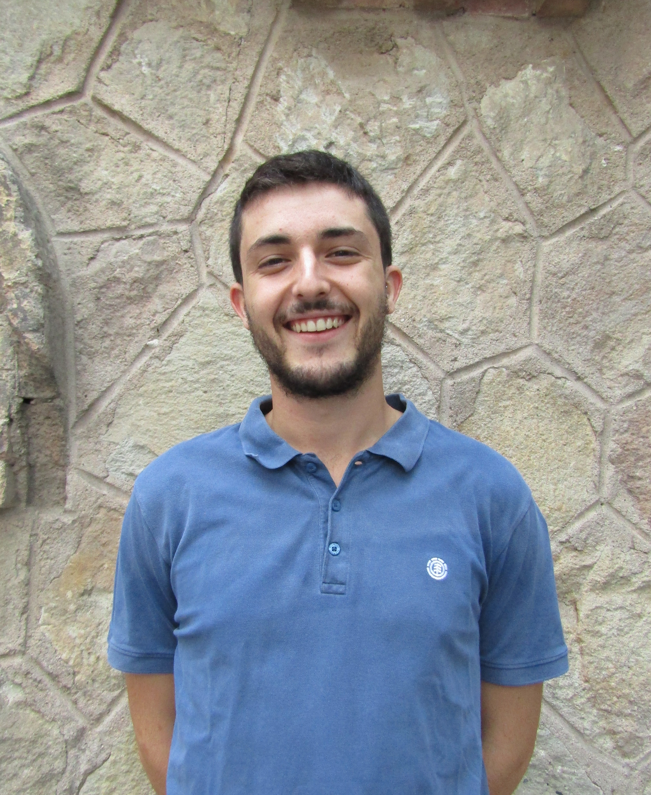
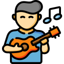

Joan Drago Mateu
Front End Developer
Hola 👋 , soy Joan, y desarrollo la parte visual (front) de las aplicaciones web modernas. Mi objetivo es desarrollar webs rápidas y seguras que benefician el aumento del SEO en los buscadores. Mi último proyecto se llama Ruedas Verdes, una PWA basada en JAMstack, te invito a que le heches un vistazo.
Experiencia
MGS Seguros
2018 - 2020
Mi función en la empresa era la de adminstrador del LMS para la
formación de los empleados. Entre mis funciones, destacaba la
maquetación de los cursos mediante HTML5, CSS3 y Bootstrap.
Desarrollador freelance
2020 - Actualidad
Me encargo de aportar valor a las empresas desarrollando
aplicaciones web que les permiten aumentar las conversiones de sus
ventas online. Además, tengo proyectos propios que desarrollo con
pasión e ilusión cada día.
Tecnologías
- 🔸 HTML 5
- 🔸 CSS 3
- 🔸 JavaScript
- 🔸 SASS
- 🔸 Bootstrap
- 🔸 Material UI
- 🔸 React JS
- 🔸 Graph QL
- 🔸 Gatsby JS
- 🔸 Node JS
Educación
Máster en Desarrollo de Aplicaciones Web
2019 - Actualidad
Las principales competencias adquiridas en el Máster Universitario
impartido por la UOC, son las siguientes: diseñar e implementar
interfaces, utilizar de manera adecuada los lenguajes de
programación y creación de sitios y aplicaciones web en función de
la necesidad del proyecto. Actualmente, mi nota media en el máster es de 9.
Carrera de arquitecto FrontEnd
2019
Mediante la plataforma de educación online, Platzi, me saqué la
carrera de arquitecto FrontEnd. A través del aprendizaje de las
últimas técnicas de CSS y Javascript realizamos proyectos reales
que ponían en práctica los conocimientos adquiridos.
Grado en Ciencias Empresariales
2014 - 2018
En 2018 mi gradué en Ciencias Empresariales por la Universidad
Pompeu Fabra, especializándome en Marketing Digital. Por suerte,
todo lo que aprendí en la carrera puedo aplicarlo a mi trabajo
diario, ya que aprendí cosas como: técnicas de investigación de
mercados, técnicas de SEO y SEM, gestión de proyectos, gestión de
CMS a nivel de usuario y desarrollo de soft skills (p.ej. mediante
presentaciones en público y trabajos en equipo).
Otros intereses

Emprendimiento

Marketing Digital

Diseño gráfico
Skateboarding
